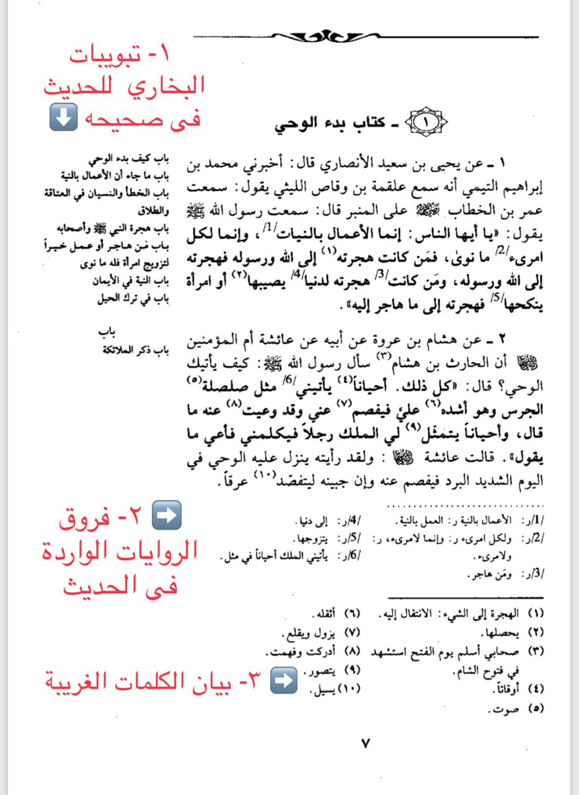

أرشيف قراءة مختصر صحيح البخاري
اليوم الأول
من فضلكن كل واحدة ترسل اسمها + إيميلها الخاص بجوجل و ليس الإيميل العادي عشان نضيفها على جدول المتابعة ✨
المجموعة ستظل مفتوحة لفترة حتى يتسنّى لكُنّ إرسال الإيميلات و الأسماء هنا. ☺
ملاحظة: الجدول لتشجيعك على الاستمرار. من لا تريد مشاركة إيميلها أو تسجيل إنجازها في الوِرد يوميًا، لا بأس 👍🏼
السلام عليكم، 🌸
قوانين المجموعة مجددًا:
☑ المجموعة مغلقة لمنع إرسال أي شيء لا يخص المبادرة. سيتم إرسال الأوراد يوميًا عليها من قبل المسؤولين فقط. و في حال وجود أي استفسار، يمكنكم إرسال رسالة خاصة لأحد المسؤولين.
☑ الأوراد ستكون يومية و سيتم إرسالها الساعة ٧ صباحًا بإذن الله. يوم الأحد راحة لاستدراك ما فاتك منها. و لكن نحرص على متابعة الأوراد أول بأوّل لئلا تتراكم. 👍🏼
☑ بعد إتمامك الوِرد اليومي، ادخلي على هذا الرابط و اكتبي كلمة "تم" في الخانة المخصصة للوِرد أمام اسمك.
https://bit.ly/2JiFhEV
ملاحظة:
التعديل على الملف مغلق لمن هو خارج هذه المبادرة و كل شخص يستطيع التعديل على خانة الإنجاز الخاصة به فقط، تفاديًا لما قد يحدث من تغيير خانات خاصة بأشخاص آخرين بالخطأ 😊 و لهذا طلبنا الإيميلات.
# الهدف
أفضل وسيلة تقاوم بها الحرب على سُنة رسول الله صلى الله عليه وسلم هي أن تعتني بها وتتأسى به عليه الصلاة والسلام ..
💎 أيريدون تشكيكنا في صحاح السنة وأصول الإسلام ..؟
حسناً .. فلنقرأ صحيح البخاري في بيوتنا ومع رفاقنا وفي مساجدنا وفي مدارسنا وأماكن عملنا ..
لنحدد وِرداً يومياً من صحيح السُنة النبوية .. بحسب طاقتنا ..
📟دقائق يومية ستكون رداً عملياً .. بها تنشر هدي النبوة وتستنير بتعاليم السراج المنير عليه الصلاة والسلام ..
🕌وكما قال الأولون :
إذا شاعت الفتن = فأظهروا السُنن .
📌فلنعاملهم بنقيض قصدهم: أرادوا إماتة السُنة = فلنُحييها .
صلوا على النبي عليه الصلاة والسلام .
- أ.د.خالد بن منصور الدريس

#مزايا ✨
📚 من أهم مزايا مختصر صحيح البخاري للشيخ سعد الشثري:
1⃣ وضع بجانب الحديث تبويبات البخاري له بحيث لا يفوت القارئ فقه الإمام البخاري وهي بمثابة الشرح للحديث.
2⃣ وضع الفروق بين الروايات الواردة في صحيح البخاري بالأرقام الأجنبية.
3⃣ فسر بعض الكلمات الغريبة الواردة في الحديث في الهامش بأرقام عربية.
4⃣جمع جميع أطراف الحديث في موضع واحد.
5⃣ حوى جميع الأحاديث التي على شرط الإمام البخاري.
وقد لقي هذا المختصر بفضل الله عناية، ويقول الشيخ سعد حفظه الله:
"ومن قرأ هذا المختصر، فإنه يضمن بإذن الله أنه لم يفته حرف من الحروف التي في (صحيح البخاري) على شرط الإمام البخاري".
صباح الخير و الهمّة 🌸
نبدأ اليوم بإذن الله مسيرة ٣٤ يومًا💪🏻
فاستعينوا بالله و ابدأوا بذهنٍ صافٍ و قلبٍ صافٍ.
المطلوب من بين كل هذه الملفات لإتمام النصاب اليومي هو قراءة ملف الورد أو الاستماع إليه و فقط. أما بقية الملفات كلها إثرائيات لمن أراد أن يستزيد فليقرأ فيها و في كلٍ خير 🌸
و لكن لتسجيل الإنجاز في ملف المتابعة، يكفي قراءة/الاستماع لملف الوِرد 👌🏻
{kind=link}